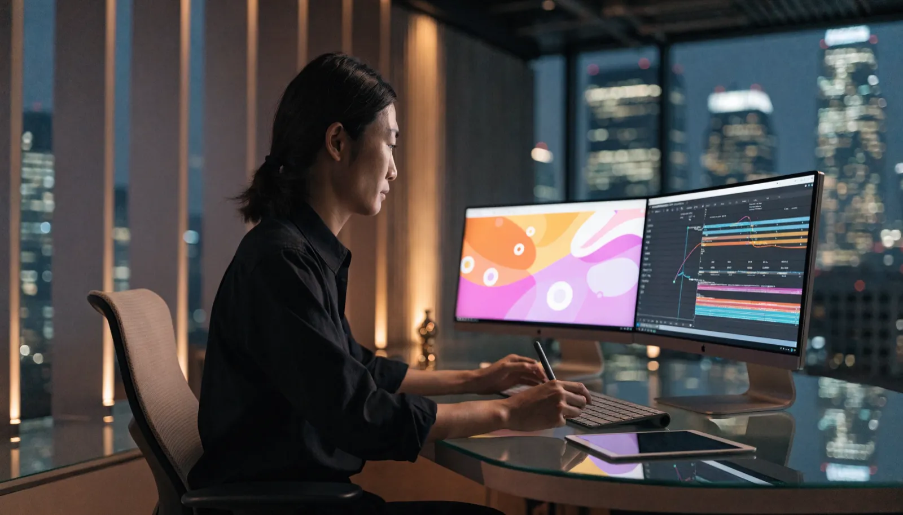

アニメーション動画制作 ｜ 東京
その複雑さを
30秒でわかるに
東京でアニメーション動画・説明動画の制作をお探しの方へ。株式会社NOKTOAは、複雑なサービスや目に見えない商材を、イラストや図解の動きでわかりやすく魅力的に伝えるアニメーション動画を、企画から制作まで自社完結でつくります。「説明が難しい」を「すぐ伝わる」に変えます。

アニメーション動画とは
アニメーション動画とは、イラストや図形、文字の動き（モーショングラフィックス）で情報を表現する動画です。実写では見せにくい仕組みや概念、無形のサービスをわかりやすく伝えられ、サービス紹介や説明動画、広告などに広く使われます。
世の中には、言葉で説明しようとすると長くなり、聞いているうちに分からなくなってしまう商材があります。ITサービス、金融商品、BtoBのソリューション、新しい仕組み——こうした「目に見えないもの」「複雑なもの」を、文章やスライドで伝えようとして苦労した経験はないでしょうか。
アニメーション動画は、こうした伝わりにくい情報を、図解と動きで一気にわかりやすくします。抽象的な概念を視覚化し、複雑な流れを順を追って見せ、要点を強調する——人間の理解は、動きと視覚に強く助けられます。実写では撮影できないものも自由に表現でき、世界観やトーンも思いのままにコントロールできるのが、アニメーションならではの強みです。
さらに、アニメーション動画は実写と違って「いつでも作り直せる」柔軟性を持ちます。サービス内容や料金が変わっても、該当する部分のテロップやシーンだけを差し替えれば、撮り直しなしで最新の情報に保てます。情報の更新が前提となるサービス紹介や説明動画において、この修正のしやすさは大きなメリットになります。
アニメーション動画が向いている理由
結論：アニメは「見えないもの・複雑なもの」を伝えるのが得意です。
1. 仕組み・概念をわかりやすく伝える
サービスの仕組みやデータの流れなど、実写では見せられないものを図解で表現できます。理解のハードルを大きく下げられます。
2. 撮影が不要で、修正もしやすい
ロケや出演者の手配が不要なため、撮影日程に縛られません。情報が変わっても該当部分だけ修正でき、長く使い続けられます。
3. ブランドの世界観を自由に表現できる
色・トーン・キャラクターまで自由に設計でき、ブランドの世界観をそのまま映像化できます。他社と差がつく独自の表現が可能です。
アニメーション動画の活用シーン
結論：「説明が必要なもの」ほどアニメが効きます。
- サービス紹介動画：ITやBtoBの無形サービスをわかりやすく紹介する
- 説明・解説動画：使い方や仕組み、申込みの流れを順に見せる
- 広告・SNS：目を引く動きで、短時間に要点を伝える
- 採用・会社紹介：事業内容や強みをコンパクトに伝える
NOKTOAは、何を誰に伝えたいのかを整理したうえで、最も伝わる構成と表現を設計します。クリエイティブ統括は業界20年のキャリアを持ち、ブランドの世界観を損なわないデザイン品質でアニメーションを制作します。情報を詰め込むのではなく、要点を絞って記憶に残す——その設計こそが、伝わるアニメーション動画の核心です。
NOKTOAのアニメーション動画が選ばれる理由
結論：私たちは「わかりやすさ」と「ブランドらしさ」を両立します。
アニメーション動画は、わかりやすければよいというものでも、おしゃれならよいというものでもありません。情報が正しく伝わり、かつブランドの世界観にも合っている——その両立があってはじめて、成果につながる動画になります。NOKTOAは、伝える設計とデザインの両輪で、その質を担保します。
- 複雑な情報を整理し、わかりやすい構成に落とし込む設計力
- 企画・脚本・デザイン・制作を自社完結。一貫した品質
- ブランドの世界観に合わせたオリジナルの表現
- 用途に合わせた尺・縦横比での書き出しに対応
東京でアニメーション動画の制作を頼むなら、「作れる会社」ではなく「わかりやすく伝えられる会社」を選ぶことをおすすめします。それが、見た人を動かす条件です。
アニメーション動画 制作の流れ
結論：完成度は「絵を描く前の設計」で決まります。
ヒアリング・整理
伝えたい内容と対象者を伺い、何をどの順で見せるかの骨子を整理します。
構成・脚本・絵コンテ
ナレーション原稿と、各シーンの絵コンテを作成。完成イメージをここで固めます。
デザイン・イラスト
ブランドの世界観に合わせて、イラストや画面のトーンを制作します。
アニメーション・仕上げ
動き・ナレーション・音楽をつけて完成。用途別の書き出しまで対応します。
とくに重要なのが、絵を描き始める前の「構成・絵コンテ」の工程です。ここで完成イメージをしっかり固めておくことで、制作中の手戻りを防ぎ、仕上がりの質も安定します。NOKTOAは、この上流の設計を丁寧に行うことで、わかりやすく、かつブランドに合ったアニメーションを実現します。
料金は 尺と作り込みに合わせて設計します
アニメーション動画の費用は「一律いくら」ではありません。動画の尺、イラストやキャラクターの作り込み、表現の凝り方によって最適な構成が変わるからです。NOKTOAは決まったパッケージを売るのではなく、ご予算と目的を伺って、その範囲で最も伝わる構成を逆算してご提案します。
スモールスタート
シンプルな短尺の説明動画から。まず要点を伝えたい方に。
スタンダード
オリジナルのデザインで、サービスをしっかり伝える本格構成。
フラッグシップ
キャラクターや世界観の作り込みで、ブランドを表現する一本に。
「この予算でどこまで作れる？」というご相談こそ大歓迎です。テンプレートを活用して費用を抑える方法から、フルオリジナルまで柔軟に組みます。ご相談・お見積もりは無料です。無理な営業は一切いたしません。
よくあるご質問
アニメーション動画とは何ですか？
イラストや図形、文字の動きで情報を表現する動画です。実写では見せにくい仕組みや概念、無形のサービスをわかりやすく伝えられ、サービス紹介や説明動画、広告などに使われます。
アニメーション動画の制作費用は東京でいくらですか？
シンプルな短尺の説明動画で20〜50万円、オリジナルのイラストや作り込みを伴うもので50〜150万円が一般的な目安です。NOKTOAは尺と作り込みに合わせてご提案します。
実写とアニメーション、どちらがいいですか？
人や場の雰囲気を伝えるなら実写、仕組みや概念・無形のサービスを伝えるならアニメーションが向いています。目的を伺い最適な手法をご提案します。
ナレーションや音楽もお願いできますか？
はい。ナレーション、BGM、効果音まで含めて一貫して制作します。ブランドのトーンに合わせて声や音も設計します。